Questão 1 · Contracepção de emergência · Métodos disponíveis · 4000185013Adolescente de 17 anos de idade, acompanhada rotineiramente no consultório, telefona informando que o preservativo rompeu na relação sexual na noite anterior. Refere relações sexuais dois dias atrás, com outros parceiros, sem uso de método contraceptivo. Nesse cenário, a melhor indicação para prevenção de gravidez indesejada é:
A Drospirenona 8 mg.
B Desogestrel 150 mcg.
C Levonogestrel 1,5 mg.
D Etinilestradiol 120 mcg e levonorgestrel 0,6 mg.
Questão 2 · Desenvolvimento dos ductos genitais · Ginecologia · 4000185012O desenvolvimento da genitália interna feminina durante o período embrionário é dependente
A da ausência de hormônio antimülleriano com consequente desenvolvimento dos ductos de Müller.
B da ausência de androgênios com consequente desenvolvimento dos ductos de Wolff.
C da presença de estradiol, favorecendo o desenvolvimento dos ductos de Müller.
D da presença de inibina, impedindo o desenvolvimento dos ductos de Wolff.
Questão 3 · Ginecologia · Puberdade Precoce Perif érica · 4000185011Menina de quatro anos de idade é levada ao atendimento médico pela mãe, por sangramento genital há dois dias. Ao exame, pequena quantidade de sangue uindo pelo meato vaginal, com hímen íntegro, vulva tró ca e mamas M3. Notou-se mancha hiperpigmentada no dorso. Dosagens hormonais basais dentro dos parâmetros esperados (LH = 0,1 U/l; FSH = 0,2 U/l; Prolactina = 11,2 ng/mL; TSH = 0,8 U/l), à exceção do estradiol acima do valor esperado para a faixa etária. A ultrassonogra a revelou ovário direito com 3,2 cm³, contendo cisto com 1,5 cm de diâmetro. Ressonância magnética cerebral sem alterações e cintilogra a óssea com focos de hipercaptação nas regiões frontal e occipital do crânio e mandíbula. Nesse caso, qual é a hipótese diagnóstica provável?
A Puberdade precoce central.
B Hiperplasia adrenal congênita forma clássica.
C Síndorme de McCune-Albrigth.
D Síndrome de excesso de aromatase.
Revisar: possível letra faltando em enunciado
Questão 4 · Tratamento · 4000185010Mulher de 23 anos de idade, nuligesta, ciclos menstruais irregulares a cada 40–60 dias, hirsutismo moderado, IMC = 31 kg/m², PA = 130x88 mmHg, acne moderada. TSH, prolactina e 17-OHProgesterona normais. Glicemia de jejum = 106 mg/dL e após duas horas de 75 g de glicose = 145 mg/dL. A intervenção mais apropriada para reduzir o risco de desenvolvimento de
A Dieta hipocalórica e atividade física.
B Espironolactona.
C Anticoncepcional oral combinado.
D Cirurgia bariátrica.
Questão 5 · Transtorno de Compulsão Alimentar TCA · Amenorreia secundária de causa hipotalâmica · 4000185009Adolescente de 16 anos de idade, em amenorreia há seis meses, apresenta histórico de distúrbio de autoimagem, compulsão alimentar episódica seguida de vômitos autoinduzidos, que ocorre em média três a quatro vezes por semana. Apresenta IMC de 19 kg/m², FSH = 5,0 UI/L, LH = 8,0 UI/L, Prolactina e TSH normais e elevação discreta dos níveis de cortisol. Além da abordagem multidisciplinar, o tratamento medicamentoso dessa paciente deverá incluir:
A Terapia de reposição hormonal.
B Benzodiazepínicos.
C Pílula de progestagênio isolado.
D Inibidores da recaptação de serotonina.
Questão 6 · Ginecologia endócrina · Puberdade Precoce Central ou GnRH dependente · 4000185008Menina de seis anos e sete meses de idade apresentou três episódios de sangramento genital. Ao exame: M4P4. O diagnóstico de puberdade precoce central pode ser firmado se
A ovários com medidas maiores que 2,5 X 2,5 cm à ultrassonografia.
B raio X de idade óssea de pelo menos um ano acima da idade cronológica.
C dosagem de estradiol sérico com nível superior a 50 pg/mL.
D padrão de resposta do teste de GnRH com elevação dos valores de LH.
Questão 7 · Tratamento das mulheres que não desejam engravidar · Diagnóstico · 4000185007Mulher de 18 anos de idade, menarca aos 13 anos, ciclos irregulares, ocorrendo a cada 50 – 80 dias. Acne e hirsutismo em face, aumento de oleosidade de pele e cabelos. Sexarca aos 17 anos, relata uso de condom nas relações sexuais. Ao exame IMC = 29 Kg/m²; PA = 110x70 mmHg; índice de Ferriman = 7. Além de orientar dieta e atividade física, qual é a melhor opção no cuidado dessa paciente?
A Sistema intrauterino de levonorgestrel.
B Implante de etonogestrel.
C Anticoncepcional hormonal combinado.
D Desogestrel contínuo.
Questão 8 · Etiologia · Quadro Clínico · 4000185006Mulher, 32 anos de idade, nuligesta, procura atendimento ginecológico referindo sangramento menstrual volumoso com coágulos há três dias. Refere que os ciclos sempre foram regulares, com intervalos de 28 dias e duração de quatro a cinco dias em moderada quantidade, porém, há cerca de um ano, apesar de regular, o volume menstrual passou a ser intenso e entre as menstruações apresenta episódios frequentes de sangramento, de pequeno volume, com duração de um a dois dias. Sem outras queixas, nega uso de medicações, última relação sexual há três anos. Ao exame físico: PA = 110x70 mmHg; FC = 104 bpm; descorada 2+/4. IMC 24 kg/m² Especular: sem lesões de vagina ou colo, com saída ativa de sangue pelo OE. Ao toque: útero de volume normal, móvel e indolor; anexos livres. Nesse caso, qual é a etiologia mais provável?
A Não estrutural – disfunção ovulatória.
B Estrutural – miomatose uterina.
C Não estrutural – coagulopatia.
D Estrutural – adenomiose.
Questão 9 · Planejamento f amiliar · 4000185005Em relação às mulheres com enxaqueca com aura, assinale a alternativa correta.
A O risco de acidente vascular encefálico hemorrágico contraindica a anticoncepção combinada.
B O anticoncepcional combinado pode ser usado se idade menor que 35 anos.
C A utilização do anticoncepcional hormonal somente com progestagênio é mais recomendável.
D A anticoncepção combinada não oral pode ser usada se não fumante.
Questão 10 · Planejamento f amiliar · 4000185004Mulher de 24 anos de idade, primípara, vai à consulta para orientação de método anticoncepcional. Paciente tem história de trombose venosa profunda há um ano. Fazia uso de preservativo, porém está com receio de seguir com esse método único e gostaria de um método mais efetivo. Apresenta ciclos regulares a cada 27 dias com uxo normal. Nega tabagismo ou uso crônico de medicamentos. Ao exame, sinais vitais dentro da normalidade e exame ginecológico normal. Qual é a recomendação mais adequada nesse caso?
A Anel vaginal.
B Diafragma.
C Dispositivo intrauterino de cobre.
D Adesivo transdérmico.
Questão 11 · Planejamento f amiliar · 4000185003Adolescente de 16 anos de idade vai à consulta acompanhada da sua mãe. Menarca com 11 anos, ciclos regulares e dismenorreia leve. Tem um namorado, porém, ainda não iniciou atividade sexual. Solicitam método de anticoncepção para início imediato. Com base nesse caso, assinale a alternativa correta.
A A primeira indicação seria um LARC (DIU, implante ou medroxiprogesterona trimestral).
B O sistema intrauterino de levonogestrel seria a opção mais adequada.
C O implante subdérmico de etonogestrel seria a opção mais recomendada.
D O injetável combinado mensal seria o LARC mais adequado nesse caso.
Questão 12 · DIU de cobre · 4000185002Mulher de 30 anos de idade comparece à emergência, pois teve relação sexual desprotegida há seis horas e procura orientação. Está em uso de quimioterapia neoadjuvante para câncer de mama recentemente diagnosticado. Faz uso de DIU TCu 380, inserido aos 16 anos de idade, ciclos regulares, DUM há dez dias. Com base nesse caso, assinale a alternativa correta.
A O método em uso está dentro do prazo validado para eficácia contraceptiva.
B A paciente não apresenta risco de engravidar, pois está em uso de quimioterapia.
C Deve ser prescrito levonorgestrel 1,5 mg via oral dose única.
D Deve ser prescrito implante de etonogestrel subcutâneo.
Questão 13 · Ética em reprodução humana · 4000185001Paciente de 18 anos de idade, nuligesta, recebeu o diagnóstico de leucemia e iniciará tratamento nas próximas semanas. Vai à consulta médica encaminhada para orientações sobre as questões reprodutivas. Em relação à criopreservação de oócitos, é correto informar à paciente que poderá ser realizada
A após a indução de ovulação com gonadotrofinas, sem que isso implique aumento de risco ou piora de prognóstico.
B após a indução de ovulação com gonadotrofinas, porém o procedimento deve ser feito entre dois ciclos de quimioterapia para não postergar o tratamento oncológico.
C sem o uso de medicamentos hormonais, pois estes podem piorar o prognóstico da leucemia e, por isso, a coleta de óvulos deve ser feita sem estímulo prévio.
D após a indução de ovulação com inibidores de aromatase para minimizar o impacto dos hormônios sobre o câncer e evitar interferência no prognóstico.
Questão 14 · Amenorreia primária · 4000185000Paciente de 17 anos de idade apresenta como queixa única nunca ter menstruado. Nunca teve relações sexuais. Ao exame físico, Tanner M4P4. Exame físico demonstrado na figura a seguir. Ao ultrassom pélvico, ovários normais, útero de 5 cm³ de volume. O cariótipo, FSH, LH e testosterona são normais. De acordo com o quadro clínico, trata-se de
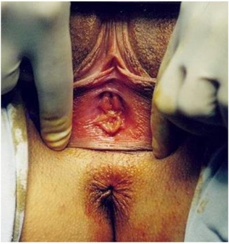
A síndrome da insensibilidade androgênica.
B hímen imperfurado.
C septo vaginal transverso.
D malformação mülleriana.
Questão 15 · Tratamento · 4000184999Mulher de 40 anos de idade chega à emergência com queixa de sangramento genital intenso. Refere laqueadura tubária há cinco anos. Ao exame, hipotensa e taquicárdica. O exame ginecológico identi cou lesão no colo do útero com sangramento intenso ativo. Traz resultado de biópsia do colo do útero que revelou carcinoma escamoso. Foi realizado exame especular e toque retal. A representação do estadiamento clínico encontra-se na imagem a seguir. Além da estabilização hemodinâmica, a conduta imediata deve ser
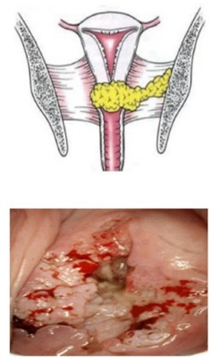
A histerectomia ampliada.
B embolização da artéria uterina.
C radioterapia sensibilizante com quimioterapia.
D tamponamento vaginal com vasoconstritor.
Questão 16 · Quadro clínico · Exames complementares · Quadro clínico · 4000184998Mulher, 62 anos de idade, menopausa aos 53 anos, em uso de tamoxifeno há três anos, após tratamento cirúrgico de câncer de mama. Atendida com queixa de sangramento vaginal há três semanas, com duração de dois dias. Exame clínico normal. IMC = 30,5 kg/m². Ultrassonografia transvaginal na imagem a seguir. Biópsia endometrial com Pipelle, negativa. Qual é a conduta nesse caso?
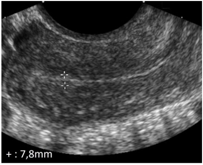
A Repetir a ultrassonografia transvaginal em três meses.
B Tomografia de abdômen e pelve.
C Suspender o tamoxifeno e iniciar inibidor da aromatase.
D Histeroscopia com biópsia.
Questão 17 · Etiologia · 4000184997Adolescente de 15 anos de idade vai à consulta por sangramento menstrual intenso desde a menarca, há dois anos. Ciclos regulares com uxo intenso e duração de oito dias. Última menstruação terminou há cinco dias. Mãe apresentava quadro semelhante. Ao exame, menina com IMC = 18 kg/m², PA = 110 x 70 mmHg, FC = 100 bpm, hipocorada 3+/4+. Exames: Ht = 27%, Hb = 9,2 g/dL, plaquetas = 244.000/mm³. Qual é a próxima conduta a ser adotada nesse caso?
A Iniciar transfusão de concentrado de hemácias.
B Solicitar ultrassonografia pélvica para descartar ovários policísticos.
C Solicitar exames laboratoriais para pesquisas de coagulopatias.
D Reavaliar em seis meses para aguardar a maturidade do eixo.
Questão 18 · Pólipos uterinos · Classif icação FIGO · 4000184996Mulher, 32 anos de idade, nuligesta, atendida com sangramento uterino anormal (SUA). Nega comorbidades ou uso de medicamentos. Exame clínico normal. O médico solicitou ultrassonografia transvaginal, conforme imagem a seguir. Tendo em vista a classificação da FIGO quanto ao SUA (PALM-COEIN), qual é o diagnóstico mais provável?
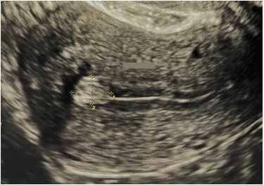
A SUA-P.
B SUA-M.
C SUA-C.
D SUA-I.
Questão 19 · Adenomiose · 4000184995Mulher de 42 anos de idade, G3P3, queixa-se de aumento da duração e quantidade do uxo menstrual há oito meses. Refere também dismenorreia intensa. O exame físico é compatível com útero discretamente aumentado de volume. A ultrassonografia está representada na imagem a seguir. Nesse caso, qual é a hipótese diagnóstica mais provável?

A Leiomiomas do útero.
B Adenomiose
C Endometriose pélvica.
D Câncer do endométrio.
Questão 20 · Tratamento das mulheres que não desejam engravidar · 4000184994Mulher, 23 anos de idade, com diagnóstico de SOP, refere uso do anticoncepcional (etinilestradiol + drospirenona) há um ano, sem melhora significativa do hirsutismo. Menarca aos 14 anos de idade, com história de intervalos longos entre as menstruações. IMC = 28 kg/m². Escore de Ferriman = 10. Assinale a alternativa mais adequada para o controle do hirsutismo.
A Suspender o anticoncepcional combinado e propor inserção de SIU de levonorgestrel.
B Suspender o anticoncepcional combinado e propor inserção de DIU de cobre.
C Manter o anticoncepcional combinado e propor associação de espironolactona 100 mg/dia.
D Manter o anticoncepcional combinado e propor associação de flutamida 750 mg/dia.
Questão 21 · Abordagem da paciente com queixa de corrimento vaginal · 4000184993Mulher, 23 anos de idade, queixa-se de corrimento vaginal claro com discreto prurido e ardência vulvar, com piora no período pré-menstrual. Ao exame ginecológico, observou-se conteúdo vaginal branco, uido, não aderente. Bacterioscopia evidenciou lactobacilos ++++/4, grande quantidade de polimorfonucleares e células intermediárias íntegras. O teste das aminas foi negativo e o pH vaginal é 4,0. Nesse caso, o diagnóstico provável é
A vulvovaginite por cândida.
B vaginose bacteriana.
C tricomoníase.
D vaginose citolítica.
Questão 22 · Síf ilis · 4000184992Mulher de 25 anos de idade recebeu tratamento adequado para sí lis primária e está fazendo uso de preservativo. No acompanhamento médico, o VDRL no terceiro mês foi de 1:64. Paciente retorna no sexto mês, assintomática. Será considerado critério mínimo necessário para o sucesso terapêutico:
A FTA-ABS negativo
B VDRL + 1: 16
C VDRL + 1:64
D RPR negativo
Questão 23 · Ginecologia · Síf ilis · Síf ilis · 4000184991Mulher de 50 anos de idade compareceu à consulta ginecológica queixando-se de lesões genitais há cerca de 30 dias, sem prurido. Ao exame observam-se lesões papulosas e não reagentes ao ácido acético em região vulvar e perianal, demonstradas na imagem a seguir. Assinale a alternativa que apresenta o diagnóstico e a conduta, respectivamente.
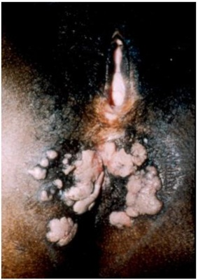
A Condiloma acuminado – eletrocauterização
B Sífilis secundária – uso de penicilina G benzatina
C Lesão intraepitelial de alto grau vulvar – uso de imiquimode
D Carcinoma verrucoso – excisão ampla da lesão
Questão 24 · Herpes genital · 4000184990Mulher de 31 anos de idade é atendida com quadro de dor, prurido vulvar e disúria. Exame clínico na imagem a seguir. Paciente refere que é o sexto episódio semelhante em um ano. Qual deve ser a conduta adotada nesse caso?
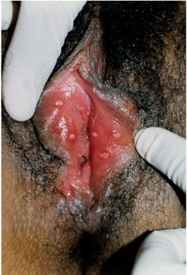
A Fluconazol 150 mg, semanalmente, por seis meses.
B Aciclovir 400 mg, 12/12h, por seis meses.
C Azitromicina 1 g por semana, por seis meses.
D Doxaciclina 100 mg, 12/12h, por três meses.
Questão 25 · Ginecologia · Tratamento · Gonococo · 4000184989Paciente de 21 anos de idade refere que, após tratamento de infecção urinária, apresentou dor articular em joelho, tornozelo direito e ombro esquerdo. Ao exame, temperatura 38,3 °C e normotensa. Exame especular na imagem a seguir. Dor à mobilização do colo do útero, Também apresenta dor ao movimento passivo do ombro esquerdo e tornozelo direito. Assinale a alternativa que apresenta o diagnóstico e o tratamento, respectivamente.
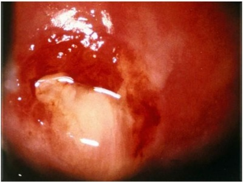
A Artrite reumatoide e corticosteroide.
B Infecção urinária não curada e nitrofurantoína.
C Infecção gonocócica e ceftriaxone.
D Donovanose complicada e penicilina.
Questão 26 · Propedêutica do casal inf értil · Etiologia · 4000184988Casal tentando engravidar há dois anos vai à consulta médica para avaliação de infertilidade. Mulher de 24 anos de idade G1A1, com ciclos regulares e dismenorreia leve. Refere infeção ginecológica tratada aos 22 anos de idade. Esposo com 27 anos de idade, sem lhos e espermograma dentro da normalidade. Ao exame ginecológico, útero de tamanho usual, sem dor à mobilização do colo do útero ou massas palpáveis. Histerossalpingografia representada na figura a seguir. Qual é o motivo mais provável da infertilidade nesse caso?
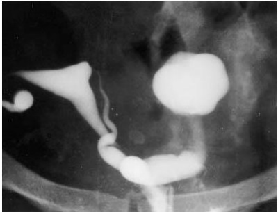
A Endometriose pélvica e peritoneal.
B Obstrução tubária secundária a infeção por clamídia.
C Abscesso tubo-ovariano por tuberculose.
D Retroversão uterina e aderências.
Questão 27 · Diagnóstico · Ginecologia · Quadro clínico · 4000184987Mulher, 47 anos de idade, refere dor abdominopélvica há três dias, acompanhada de febre e corrimento amarelado com odor fétido, está sendo atendida na emergência. Exame físico: PA = 100x60 mmHg, FC = 98 bpm, temperatura = 39 °C. Abdome: dor à descompressão brusca em fossa ilíaca esquerda. Toque vaginal: útero e anexos com dor à mobilização. Qual é o diagnóstico mais provável nesse caso?
A Peritonite por DIP.
B Diverticulite.
C Síndrome da dor vesical.
D Cálculo uretral obstrutivo à esquerda.
Questão 28 · Ginecologia · Tratamento · 4000184986Paciente com diagnóstico de doença inflamatória pélvica em tratamento adequado há 72 horas, com piora clínica. À revisão do caso, paciente é usuária de dispositivo intrauterino e apresenta evolução e exames complementares que sugerem diagnóstico de abcesso tubo-ovariano. Nesse caso, qual a alternativa correta em relação ao DIU?
A O DIU deve ser retirado imediatamente.
B A retirada do DIU é opcional.
C O DIU deveria ter sido retirado no diagnóstico inicial.
D O DIU deve ser retirado após concluída a antibioticoterapia.
Questão 29 · Ginecologia · Farmacológicos · 4000184985Mulher de 55 anos de idade refere urgência miccional e incontinência urinária de urgência há seis meses, sem melhora com sioterapia. É hipertensa controlada com hidroclorotiazida, e está em tratamento de glaucoma de ângulo agudo há três meses. Qual é a melhor opção medicamentosa para essa paciente?
A Agonista B3 adrenérgico.
B Antagonista B3 adrenérgico.
C Agonista B1 colinérgico.
D Antagonista B1 colinérgico.
Questão 30 · Tratamento · 4000184984Mulher de 37 anos de idade, tabagista, atendida com sangramento uterino anormal nos últimos 12 meses. Refere aumento de uxo menstrual e cólicas. Exame ginecológico evidencia útero discretamente aumentado. Ultrassonogra a transvaginal: múltiplos miomas, sendo os maiores de 3 e 4 cm, intramurais. Qual é a conduta mais adequada a ser adotada nesse caso?
A Miomectomia histeroscópica.
B Sistema intrauterino de levonorgestrel.
C Análogo do GnRH.
D Pílula anticoncepcional combinada.
Questão 31 · Quadro clínico · Exames complementares · 4000184983Mulher de 36 anos de idade, nuligesta, com queixa de dismenorreia associada à dispareunia de profundidade, constipação intestinal e disquezia, mais acentuada durante o período menstrual. Ao toque vaginal, útero de tamanho normal, com pouca mobilidade. Palpa-se nódulo doloroso no septo retovaginal. Anexos fixos, de tamanho normal e dolorosos à palpação. Qual é o próximo passo na investigação desse caso?
A Dosagem de CA-125.
B Vídeolaparoscopia.
C Histerossalpingografia.
D Ressonância magnética da pelve.
Questão 32 · Ginecologia · Regimes terapêuticos · 4000184982Mulher de 51 anos de idade, G2P2, teve sua última menstruação há cerca de 13 meses. Refere fogachos intensos, especialmente durante a noite, que interferem na qualidade do sono. Além disso, queixa-se de redução da lubri cação vaginal e dispareunia, associada à redução do desejo sexual. Como antecedentes pessoais, é hipertensa, controlada com medicação; faz atividade física cinco vezes por semana e considera sua alimentação bastante saudável. Ao exame: PA = 120x80 mmHg; IMC = 21 Kg/m²; exame de mamas sem anormalidades e exame ginecológico com mucosa vaginal hipotrófica. Qual é o tratamento mais adequado para os sintomas climatéricos dessa paciente?
A Estradiol transdérmico 25 mcg/dia + acetato de noretisterona transdérmico.
B 17 beta estradiol oral 1 mg/dia + didrogesterona oral 5 mg/dia.
C Gabapentina oral 900 mg/dia.
D Anticoncepção hormonal combinada com estradiol e nomegestrol.
Questão 33 · Ósseas · Ginecologia · Osteoporose · 4000184981Mulher negra, 52 anos de idade, G3P3, menopausada há 15 anos, vai à consulta ginecológica para avaliação de rotina. Refere nunca ter feito terapia hormonal, pois há vários casos de câncer de mama na família. Nega queixas. Refere ter asma grave, bem controlada com corticoides, desde os 15 anos de idade. Faz uso de anti-hipertensivo, com bom controle pressórico e de benzodiazepínico devido a quadro de insônia. Nega realizar dietas especí cas e nega prática de atividade física nos últimos cinco anos. Refere tabagismo e nega etilismo. Refere que mãe e avó maternas têm diagnóstico d e osteoporose. Ao exame físico: PA = 130x80 mmHg; FC = 66 bpm; IMC = 32,6 Kg/m². Exame físico geral e ginecológico sem alterações. Quais características apresentadas na história clínica e exame físico dessa paciente são fatores de risco para osteoporose?
A Raça negra, uso de benzodiazepínico e sedentarismo.
B Uso de benzodiazepínico, antecedente familiar de risco para osteoporose e obesidade.
C Menopausa precoce, antecedente familiar de osteoporose, tabagismo.
D História familiar de risco para câncer de mama, sedentarismo e uso crônico de corticoide.
Revisar: possível letra faltando em enunciado
Questão 34 · Tratamento não hormonal dos sintomas climatéricos · Ginecologia · Terapia hormonal · 4000184980Mulher de 53 anos de idade refere sintomas de ondas de calor, cerca de dez episódios diariamente. Relata câncer de mama tratado há seis anos. Refere história familiar de osteoporose. Nesse caso, qual é o tratamento mais indicado?
A Raloxifeno.
B Tamoxifeno.
C Gabapentina.
D Olanzapina.
Questão 35 · Biópsias da mama · Cistos mamários · 4000184979Mulher de 33 anos de idade queixa-se de nódulo doloroso em mama direita há três meses. Ao exame físico nota-se nódulo bem delimitado de 3 cm de diâmetro em quadrante superior externo da mama direita. Não há alterações de pele ou aumento de linfonodos axilares. A ultrassonografia está representada na imagem a seguir. Nesse caso, qual deve ser a conduta a ser adotada?
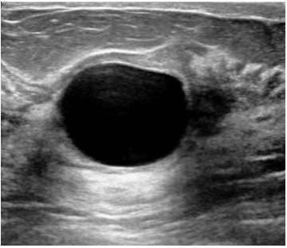
A Biópsia com agulha grossa da cápsula da lesão.
B Exérese cirúrgica da lesão.
C Punção aspirativa com agulha fina.
D Anti-inflamatórios não hormonais.
Questão 36 · Descarga papilar · 4000184978Mulher de 42 anos de idade queixa-se de secreção mamilar sanguinolenta espontânea de mamilo direito há três meses. Os aspectos clínico e ultrassonográfico estão representados na imagem a seguir. Qual é a hipótese diagnóstica nesse caso?
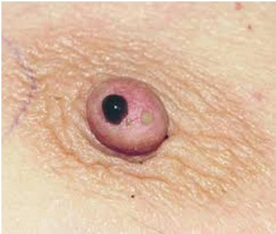
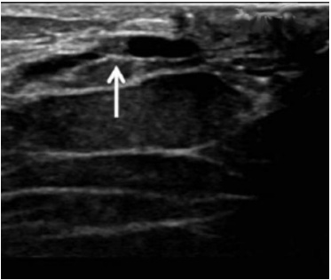
A Carcinoma lobular.
B Doença de Paget.
C Ectasia ductal.
D Papiloma intraductal.
Questão 37 · Mastite periareolar · 4000184977Mulher de 32 anos de idade, G3P3, em uso de anticoncepcional combinado e tabagista. Apresenta drenagem espontânea de secreção mucopurulenta pela aréola, sendo este o quarto evento. Em dois episódios utilizou ampicilina, no último apresentou drenagem espontânea e cura subsequente. A mama acometida está representada na imagem a seguir. O diagnóstico provável nesse caso é
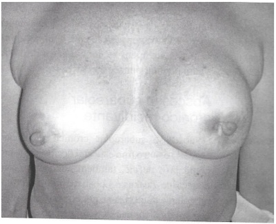
A abscesso subareolar recidivante crônico.
B doença de Paget.
C tuberculose mamária.
D doença de Mondor.
Questão 38 · Tratamento · 4000184976Paciente de 32 anos de idade, nuligesta, tentando engravidar há cinco anos. Refere ciclos regulares, sem doenças crônicas ou cirurgias prévias. Nega dispareunia ou dor pélvica. Marido com 35 anos de idade, sem comorbidades. Exames: espermograma sem alterações; dosagens hormonais normais e histerosalpingogra a conforme imagem a seguir. Realizou ultrassonografia transvaginal que confirmou os achados da histerossalpingografia. Assinale a conduta que apresenta mais chances de concepção para esse casal.
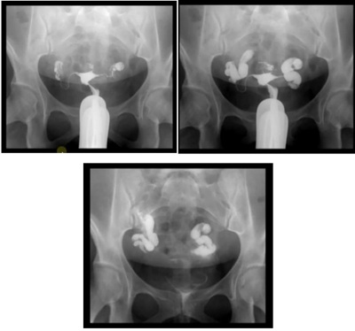
A Tratamento de fertilização in vitro sem intervenção cirúrgica prévia.
B Salpingectomia bilateral e a seguir um procedimento de fertilização
C Salpingoplastia bilateral, comprovação de patência tubária por histerossalpingografia pós-cirúrgica e tentativa de concepção espontânea por seis meses.
D Inseminação intrauterina com monitorização da ovulação espontânea, visto que a histerossalpingografia pode ter desfeito pequenas sinéquias.
Questão 39 · Ginecologia · 4000184975Mulher trans de 19 anos de idade é encaminhada a um serviço terciário do Sistema Único de Saúde para hormonização. De acordo com a portaria vigente do Ministério da Saúde para o atendimento a pacientes transgênero pelo SUS, fazem parte dos critérios de elegibilidade para iniciar a hormonização:
A Idade maior que 21 anos, avaliação prévia por um médico treinado para o diagnóstico e assinatura de termo de consentimento para o uso da medicação.
B Idade maior que 18 anos, avaliação por um médico treinado para esse diagnóstico e autorização judicial.
C Idade maior que 21 anos, avaliação prévia realizada por profissional de saúde mental e documento de próprio punho com a concordância em receber a medicação.
D Idade maior que 18 anos, avaliação prévia realizada por profissional de saúde mental e assinatura de termo de consentimento para o uso da medicação.
Questão 40 · Prevenção · 4000184974Mulher de 51 anos de idade, branca, nuligesta, menarca aos 14 anos de idade, ciclos regulares, sem doença mamária prévia. Mãe e irmã com carcinoma lobular de mama após os 60 anos. Cálculo do risco de câncer de mama pelo modelo de Gail com um resultado de 3,1% para cinco anos e de 25,7% para o resto da vida. Solicita prescrição de medicamento para a prevenção do câncer de mama e não gostaria de realizar procedimento cirúrgico. Qual medicação poderia ser recomendada como prevenção primária para essa paciente?
A Bromocriptina.
B Tamoxifeno.
C Anastrozole.
D Vitamina E.
Questão 41 · Rastreamento nas pacientes de alto risco · 4000184973Mulher com 30 anos de idade, nuligesta, refere que a mãe e a avó materna apresentaram câncer de mama com 36 e 39 anos, respectivamente. A mãe realizou análise genética e apresentou mutação de BRCA 1. A paciente aguarda o resultado da mutação. Colocou prótese mamária aos 20 anos de idade. O exame de imagem recomendável para o acompanhamento dessa paciente é
A ecografia mamária.
B mamografia.
C tomossíntese.
D ressonância magnética.
Questão 42 · Fatores de risco · Prevenção · 4000184972Mulher de 40 anos de idade, G2P2, usuária de sistema intrauterino de levonogestrel, recentemente diagnosticada com mutação do gene BRCA1. Ressonância das mamas, ultrassonografia transvaginal e CA 125 normais. Qual deve ser a conduta a ser adotada nesse caso?
A Oferecer salpingooferectomia e adenomastectomia profiláticas.
B Manter rastreamento de câncer de mama e ovário anuais.
C Iniciar tamoxifeno profilático e manter por cinco anos.
D Oferecer histerectomia e salpingooforectomia profiláticas.
Questão 43 · Vacinas · 4000184971No que se refere à vacina contra o vírus do HPV para a prevenção do câncer de colo do útero, é correto afirmar:
A De acordo com o plano nacional de imunização brasileiro, a vacina é fornecida para meninas imunocompetentes de 9 a 14 anos de idade, com três doses.
B De acordo com o plano nacional de imunização brasileiro, a vacina é fornecida para mulheres imunossuprimidas de 9 a 26 anos de idade, com três doses.
C A vacina disponível no Brasil pelo plano nacional de imunização foi desenvolvida contra o HPV dos tipos 16, 18, 31 e 45.
D A vacina tem mais efetividade se ministrada antes do início da atividade sexual, porém pode ser usada em indivíduos já sexualmente ativos.
Questão 44 · Líquen escleroso · 4000184970Criança de cinco anos de idade foi levada pela mãe ao pediatra com queixa de prurido genital há cerca de dois meses. A genitália externa da criança não revelou sinais de infecção fúngica ou de abuso sexual e a inspeção vulvar está representada na imagem a seguir. A mãe refere ter administrado medicação para parasitoses intestinais há três meses. Assinale a conduta adequada ao caso.
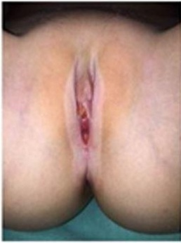
A Realizar biópsia e iniciar tratamento com estrogênio tópico.
B Não realizar biópsia e iniciar o uso de dermocorticoide.
C Realizar biópsia e iniciar terapia de luz.
D Não realizar biópsia e iniciar testosterona de uso tópico.
Questão 45 · Lesão intraepitelial escamosa de baixo grau · 4000184969Mulher de 26 anos de idade traz resultado de citologia oncótica atual com lesão intraepitelial escamosa de baixo grau. Refere ter tido esse mesmo resultado na sua última citologia há um ano. A colposcopia está representada na imagem a seguir. De acordo com Diretrizes Brasileiras para o Rastreamento do Câncer do colo do útero, a conduta adequada nesse caso é
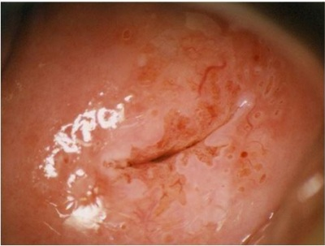
A não fazer biópsia e realizar citologia em 12 meses.
B realizar eletrocauterização e teste de DNA de HPV 16 em seis meses.
C realizar o “Ver e tratar” e pesquisa de PCR de HPV em 12 meses.
D cauterizar com ácido tricloroacético 90% e colposcopia em seis meses.
Questão 46 · Lesão intraepitelial de alto grau · 4000184968Mulher, 42 anos de idade, traz laudo de citologia de rastreamento do câncer do colo uterino com lesão intraepitelial escamosa de alto grau (H-SIL). Colposcopia demonstrada na imagem a seguir. Qual deve ser a conduta a ser adotada nesse caso?
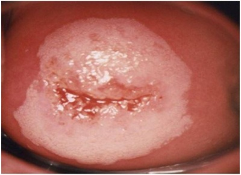
A Realizar teste para o HPV.
B Repetir a citologia em seis meses.
C Excisão da zona de transformação.
D Traquelectomia radical.
Questão 47 · Tratamento cirúrgico · Tratamento adjuvante · 4000184967Mulher de 54 anos de idade, submetida a histerectomia total, salpingooforectomia bilateral e biópsia do linfonodo sentinela bilateralmente por videolaparoscopia. O anatomopatológico revelou adenocarcinoma endometrioide grau II do endométrio, invadindo 30% do miométrio, sem invasão de colo ou anexos, ausência de sinais de embolização angiolinfática. Identificados um linfonodo à direita e um à esquerda, sem sinais de invasão neoplásica. Qual deve ser a conduta a ser adotada nesse caso?
A Reoperar para linfadenectomia pélvica e para-aórtica.
B Indicar braquiterapia.
C Indicar apenas seguimento.
D Indicar radioterapia externa.
Questão 48 · Diagnóstico · Ginecologia · Câncer de ovário · 4000184966Mulher, 55 anos de idade, menopausa aos 49 anos, refere dor pélvica há seis meses. Nega comorbidades. Ao exame físico, foi identi cada “massa” em anexo direito. Solicitada ultrassonogra a com Doppler: a imagem a seguir corresponde à região anexial direita, com massa medindo 6 cm. Exames laboratoriais: CEA = 1,5 ng/mL e CA-125 = 103 U/mL. Qual é a principal hipótese diagnóstica?
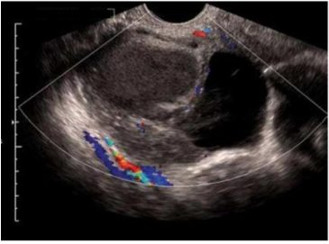
A Hidrossalpinge.
B Fibroma ovariano.
C Cistoadenocarcinoma seroso.
D Cistoadenoma mucinoso.
Questão 49 · Ginecologia · Prépúbere · Tumores de céulas germinativas · 4000184965Menina de 12 anos de idade, nunca menstruou, queixa-se de aumento de volume abdominal. Ao exame físico, palpa-se massa endurecida que se estende da pelve à cicatriz umbilical. A ressonância está representada na imagem a seguir. A congelação intraoperatória foi compatível com disgerminoma de ovário direito. Qual é a conduta cirúrgica nesse caso?
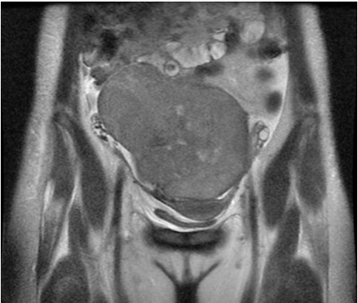
A Salpingooforectomia direita e linfadenectomia pélvica e para-aórtica.
B Histerectomia total e salpingooforectomia bilateral.
C Salpingooforectomia direita e biópsia em cunha do ovário esquerdo.
D Interrupção da cirurgia e indicação de quimioterapia neoadjuvante imediata.
Questão 50 · Cirúrgico · Ginecologia · 4000184964Mulher de 57 anos de idade tem o exame físico demonstrado na imagem a seguir. Foi indicada histerectomia vaginal. Para esse caso, não deve ser realizada durante o ato operatório:
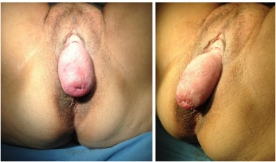
A Incisão circunferencial no epitélio vaginal na junção do colo do útero para facilitar a celiotomia.
B Promontofixação para prevenção do prolapso de cúpula vaginal (nível 1 de DeLancey).
C Colpoplastias (fascioplastias) anterior e posterior para correções das disfunções do nível 2 de DeLancey.
D Colpoperineoplastia para correção do nível 3 de DeLancey.
Questão 51 · Ginecologia · Antibioticoprof ilaxia Cirúrgica · 4000184963Mulher de 53 anos de idade, G1P1, irá realizar histerectomia vaginal por sangramento uterino não responsivo ao tratamento clínico. O exame apresenta um POP-Q Aa -2, Ba -2, C -4, Ap -2, Bp -2 e IMC de 45 kg/m². A profilaxia antimicrobiana será de cefazolina 2000 mg adicionada de
A metronidazole 500 mg.
B clindamicina 600 mg.
C azitromicina 500 mg.
D cefazolina 1000 mg.
Questão 52 · Tratamento · Ginecologia · 4000184962Qual é o melhor exame para detectar um angulamento ureteral durante a cirurgia de correção de prolapso vaginal apical?
A Observar ejaculação ureteral por uretrocistoscopia.
B Observar volume da diurese miccional por 30 minutos.
C Injeção de azul patente intravesical.
D Ultrassonografia transvaginal.
Questão 53 · Ginecologia · Perf uração uterina · 4000184961Em procedimento de histeroscopia cirúrgica para polipectomia em paciente de 68 anos de idade, após a dilatação do colo uterino com velas de Hegar até número 9, foi introduzido o ressectoscópio e visualizada a cavidade uterina, conforme imagem a seguir. Qual deve ser a conduta a ser adotada nesse caso?
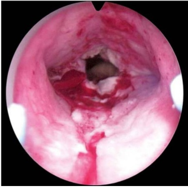
A Laparoscopia imediata.
B Aplicação local de vasopressina.
C Administração intravesical de azul de metileno.
D Retirada do instrumental.
Questão 56 · Ginecologia · Slings · 4000184958Mulher, 42 anos de idade, multípara, atendida com queixa de perda urinária durante os esforços sem melhora com exercícios perineais. Nega uso de medicamentos e comorbidades. Refere 6 a 8 h de sono ininterruptos à noite. Exame físico normal, realizado com a bexiga vazia, e não sendo observada perda de urina aos esforços. Qual deve ser a conduta adotada nesse caso?
A Orientação de urinar a cada duas horas.
B Evitar cafeína e outros irritantes vesicais.
C Oxibutinina.
D Sling
Questão 57 · Ética em reprodução humana · 4000184957A resolução do CFM nº 2.294, de 27 de maio de 2021, referente aos tratamentos de reprodução assistida, norteia as condutas nesta área da Medicina. Com base nas orientações dessa resolução atualmente vigente, no que se refere a esses procedimentos para a população LGBTQIA+, assinale a alternativa correta.
A Os procedimentos de reprodução assistida são permitidos para pessoas transgênero masculino e feminino após aprovação do CRM.
B A gestação compartilhada, em que se utiliza oócitos de uma parceira e útero da outra, é permitida para casal homoafetivo feminino.
C Nos casos de casal homoafetivo masculino, é permitida a fecundação de oócitos por um “mix” (mistura) de espermatozoides de ambos, com transferência de embriões formados de origem aleatória.
D O uso de cessão temporária do útero para casal homoafetivo masculino demanda a autorização judicial para que seja realizado.
Questão 58 · Quimioprof ilaxia · 4000184956Jovem de 18 anos de idade, atendida no pronto-socorro, chorando muito, referindo sangramento genital após ter sido forçada a ter relações sexuais com um desconhecido, sem o uso de preservativo, cerca de quatro horas atrás. Refere sexarca aos 17 anos de idade e usa anticoncepcional oral combinado. Ao exame ginecológico, foram observadas áreas de equimose e de pequeno sangramento em introito vaginal. Com vistas à prevenção de infecções não virais de transmissão sexual, a conduta é:
A Penicilina G benzatina 2,4 milhões UI; ceftriaxona 500 mg dose única + azitromicina 1 g dose única; metronidazol 2 g dose única.
B Penicilina G benzatina 2,4 milhões UI; ceftriaxona 250 mg dose única + metronidazol 2 g dose única.
C Penicilina G benzatina 1,2 milhões UI; doxiciclina 100 mg 12/12 horas por sete dias; metronidazol 1 g por sete dias.
D Penicilina G benzatina 1,2 milhões UI; ceftriaxona 500 mg dose única + azitromicina 1 g dose única; metronidazol 2 g dose única.
Questão 59 · Cisto Hemorrágico roto · Ginecologia · 4000184955Mulher de 34 anos de idade, G1P1 referindo dor aguda em fossa ilíaca esquerda (FIE), iniciada após atividade sexual, acompanhada de náuseas. Apresenta ciclos menstruais irregulares e não se recorda da data da última menstruação. Ao exame encontra-se hipocorada, com PA = 80x50 mmHg, FC = 118 bpm, T = 37 °C abdome plano, tenso e doloroso à palpação profunda e à descompressão em FIE. Teste de gestação negativo. Na ultrassonogra a pélvica, grande quantidade de líquido em cavidade peritoneal com debris e imagem complexa com aspecto de "favo de mel", medindo 6 x 5 cm de diâmetro em anexo esquerdo. A conduta para o melhor cuidado dessa paciente é:
A Hidratação endovenosa, analgesia e repetição de beta-hCG em 48 horas.
B Antibioticoterapia de amplo espectro.
C Videolaparoscopia.
D Metotrexate intramuscular.
Questão 60 · Ética Médica · Ginecologia · 4000184954O médico realizou atendimento de uma paciente por telemedicina, obtendo antes termo de consentimento livre e esclarecido (TCLE) para a realização da consulta e autorização expressa para gravação. A paciente mostrou, na chamada de vídeo, uma lesão vulvar a esclarecer, e o médico pretende usar o De acordo com as normas vigentes, é correto afirmar: Respostas: 1 12 23 34 45 56
A Não há proibição quanto à utilização da imagem, pois há TCLE da consulta.
B Uma vez autorizada a gravação da consulta, é livre o uso das imagens pelo médico.
C A autorização para o uso da imagem da lesão deve ser específica e, preferencialmente, por escrito.
D É necessário o cadastro como projeto na Plataforma Brasil para o uso da imagem em aula.